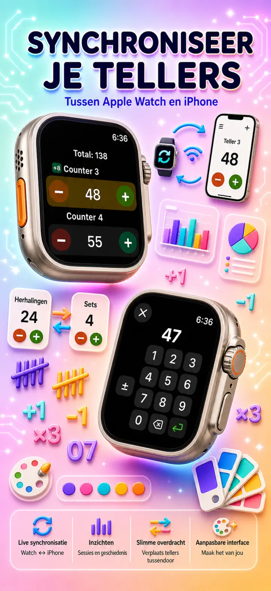
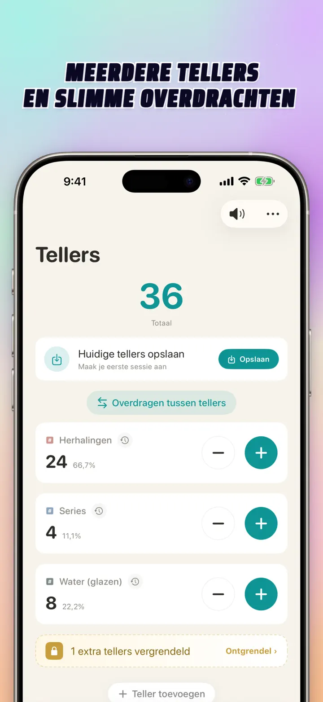
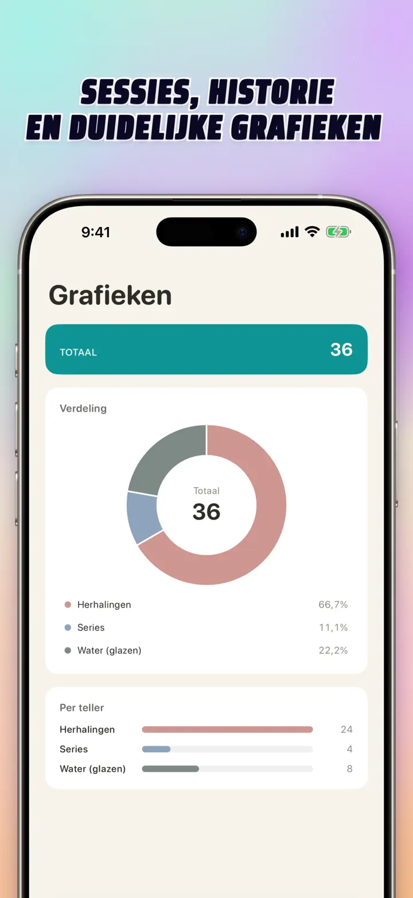
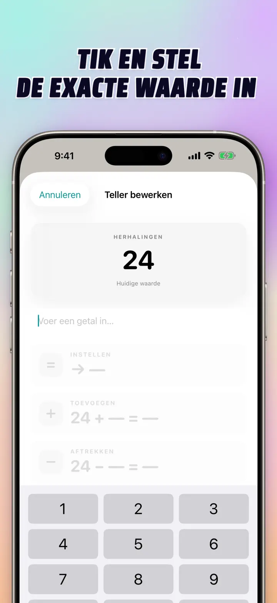
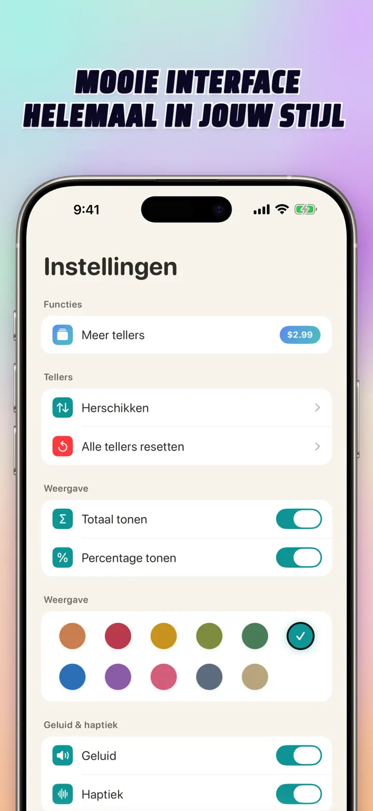
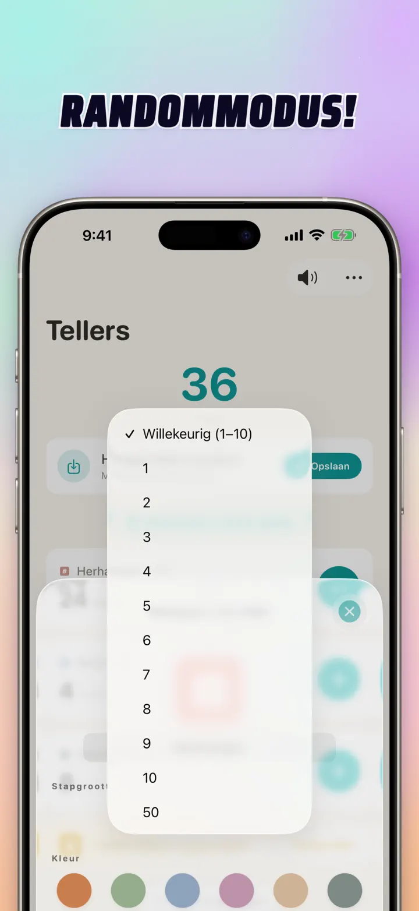

Teller 123
Watch-sync, klikker, score
Nieuw: widgets op het beginscherm — tik op +/- op de widget, app niet nodig. Teller en klikker met Apple Watch-sync, willekeurige modus, grafieken en historie.
Download in de App StoreOver de app
Teller 123 is de snelle, flexibele teller voor iPhone, iPad en Apple Watch. Geef je tellers een naam, kies een kleur en tel alles — trainingsreps, breisteken, rozenkrans, puntentellingen, voorraad, spelscores. Alles blijft lokaal op je apparaat, volledig offline.
AANGEPASTE TELLERS
- Maak aparte tellers voor activiteiten, games, routines of lijsten
- Eigen naam en kleur per teller
- Sleep om te herordenen
- Houd ingedrukt voor snel tellen
- Werkt volledig offline — geen registratie, geen cloud
DIRECTE INVOER & BULK-ACTIES
- Tik op een teller om een startwaarde direct in te stellen — geen reset nodig
- Bulk toevoegen/aftrekken: wijzig een teller in één keer met elk getal
- Overdracht: verplaats een waarde van de ene teller naar de andere zonder dubbel werk
- Aangepaste stap: één tik voegt 1, 5, 10, 100 toe — of wat jij kiest
- Live-voorvertoning van elke wijziging
WILLEKEURIGE MODUS
- Laat een teller bij elke tik een nieuwe waarde van 1 tot 10 rollen
- Tel willekeurige waarden op of trek ze af met + en -
- Handig voor oefeningen, games, beloningen, klasactiviteiten en routines
- Elke willekeurige tik wordt opgeslagen in de geschiedenis van de teller
TOTALEN & GRAFIEKEN
- Totaal over alle tellers in één oogopslag
- Procentweergave: aandeel van elke teller in het totaal
- Interactieve staafgrafiek — wissel tussen waarde (#) en percentage (%)
- Sorteer op waarde voor directe ranglijst
GESCHIEDENIS & DELEN
- Volledige wijzigingsgeschiedenis: elke toename, afname en bewerking
- Sla tellersets op en herlaad ze meteen
- Deel configuraties met teamgenoten, leerlingen of vrienden
LIVE SYNC MET APPLE WATCH
- Werk een teller bij op iPhone of Apple Watch en beide blijven gesynchroniseerd
- Echte native watchOS-app — geen companion-schil
- Namen, kleuren en waarden gesynchroniseerd op je pols
- Tik om te tellen, houd vast voor herhaling, direct vanaf het horloge
- Werkt zelfstandig als je iPhone buiten bereik is
GEBOUWD VOOR iPhone, iPad & APPLE WATCH
- Aangepaste layouts voor elk schermformaat
- iPad toont meer tellers tegelijk, Split View ondersteund
- Privacy voorop: lokale opslag, geen cloud, geen account
PERFECT VOOR
- Sportschool reps en sets
- Breisteken en haaksteken
- Rozenkrans, tasbih, gebedskralen
- Klassenpunten en leerlingtelling
- Voetbal, hockey, korfbal, handbal — snel scorebord
- Voorraadtellingen en inventarisatie
- Bordspellen, kaartspellen, klaverjas
- Zwembaantjes en loopronden
- Vogelobservatie
- Bezoekers- en deelnemerstelling
- Gewoonte-tracking en doelenreeksen
- Magazijninventaris
Download Teller 123 en tel alles moeiteloos — helder, snel, privé.
Privacybeleid: https://masawata.net/privacy-policy.html Gebruiksvoorwaarden: https://www.apple.com/legal/internet-services/itunes/dev/stdeula/
Schermafbeeldingen






Teller 123
Nieuw: widgets op het beginscherm — tik op +/- op de widget, app niet nodig. Teller en klikker met Apple Watch-sync, willekeurige modus, grafieken en historie.
Download in de App Store